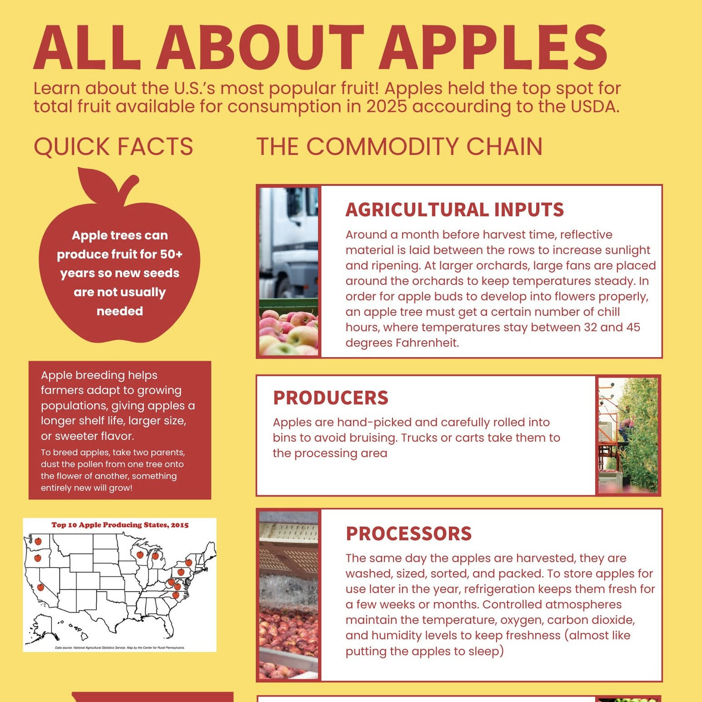
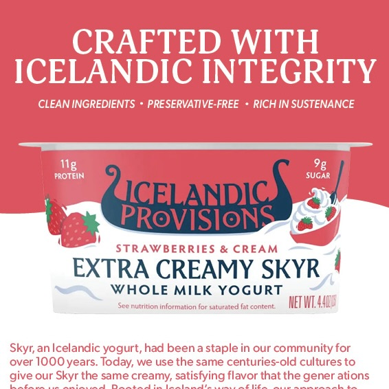
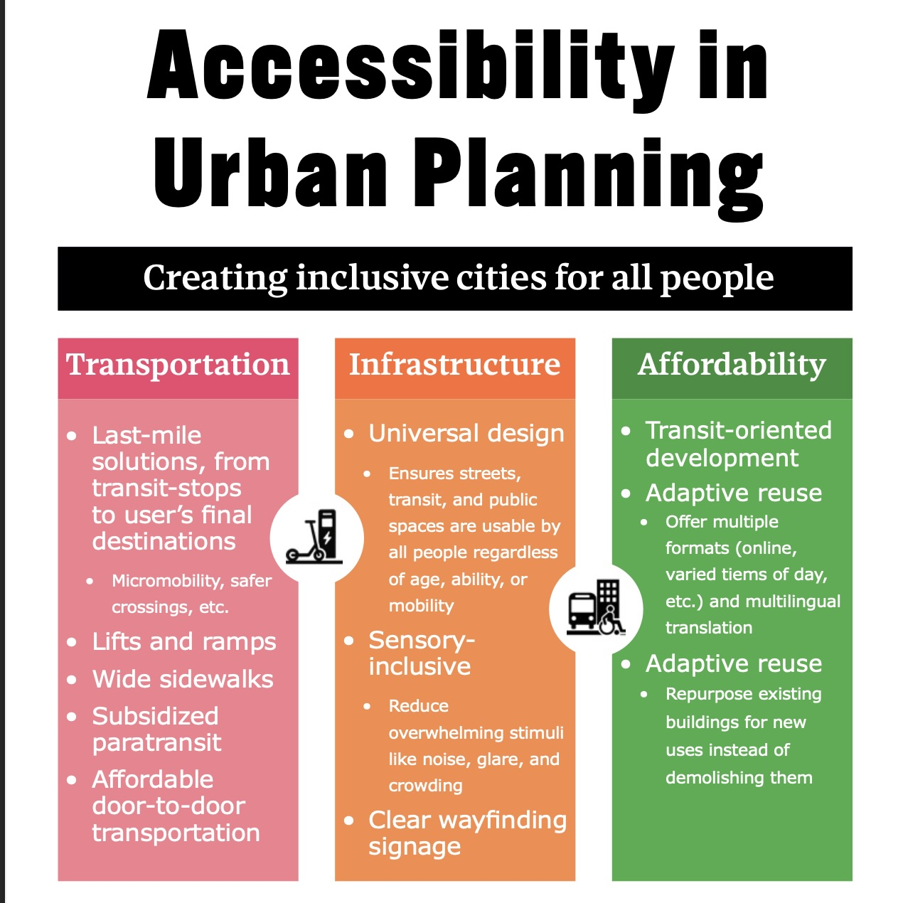

Short Form
Two-page Spread

I recreated this spread from an old Esquire issue using Adobe Indesign. I learned how write on lines and use the Adobe Fonts website to match fonts from the original design. My favorite part was changing the width, length, and spacing of the letters to match the specific text. The hardest part was designing the Esquire logo without the overlapping lines, and getting the "Jeff" lines to curve.
Infographic

I decided to design my infographic around a topic of a recent research project I had: apples! First I creating a draft in Canva beofre creating the final version in Adobe Indesign. I used Adobe Illustrator to recolor a vector of Washington State red to use as one of my textboxes.
Advertisement

I used Adobe Illustrator to create this advertisement for my favorite yogurt brand, Icelandic Provision. I used Adobe Fonts to match the fonts from the yogurt's packaging, and wrote a short blurb emphasizing the brand's identity as a high-end "natural" and sustainable product. The most challeneging part of this design was creating the waved line that splits the red and white background, and makeing sure it aligned withe the waves on the photo of the yogurt container. I took my peers' advice in workshop to uncenter the body text and use a different font for the body and subtitle instead of using the same font throughout the design.
Accessible Design

I used Adobe InDesign to create an interactive, accesible pdf that could be read by a screenreader. I also made sure to use color contrast that meets accessibility guidelines, and included clear icons to serve as a visual aid to explain the content. The topic of my PDF was accessibility in urban planning, which is my career intrest. I broke down accessibility into three categories: transportation, infrastructure, and affordability, and used strategies I've learned from my recent coursework.